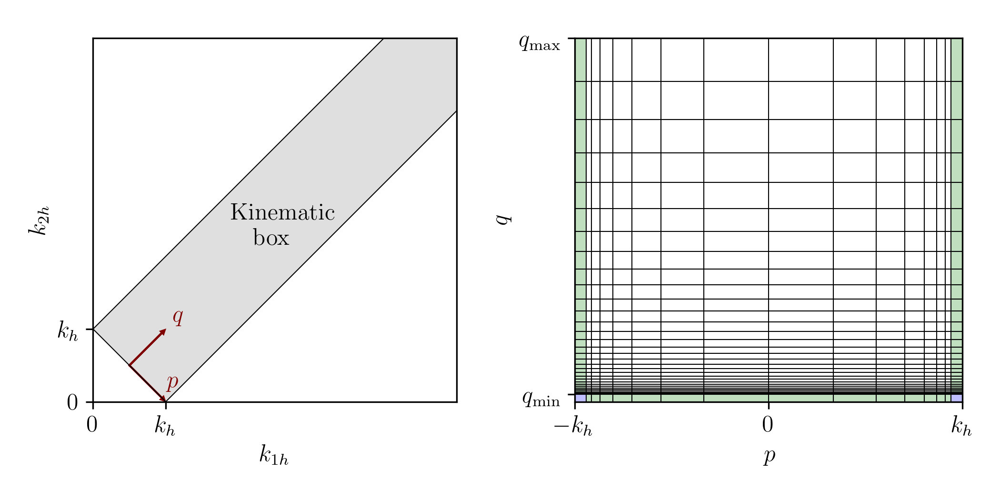

Basics
We use structures for storing grids, dissipation coefficients, parameters, diagnostics, etc. For all physical systems, we define a general structure containing all variables and parameters necessary for a simulation (see e.g. Acoustic2D).
Structures
WavKinS.diagnostic_container — TypeStructure containing diagnostics, spectra, etc.
glob_diag::Dict{String, global_ouput} # dictionary with global outputs
sp_outs::Dict{String, spectral_output} # dictionary with spectral outputs
sp_store::Dict{String, Array{Float64}} # dictionary with stored in memory spectral quantitiesWavKinS.diagnostic_container — Methodfunction diagnostic_container(Mh::Int, Mz::Int)Constructor of a diagnostic_container for wave_spectrum_khkz with Mh and Mz points. Same ininitialisation as diagnostic_container(M::Int).
WavKinS.diagnostic_container — Methodfunction diagnostic_container(M::Int)Constructor of a diagnostic_container for a wave_spectrum with M points.
The dictionaries are initialised by default with standard outputs:
glob_diag : It contains the keys "Times", "H", "N", and "Disp":
"Times" => "Times of global quantities"
"H" => "Total energy"
"N" => "Total wave action"
"Disp" => ""Total dissipation""
sp_outs : It contains the keys "nk", "Ek", and "Pk"
"nk" => "Wave action spectrum"
"Ek" => "Energy spectrum"
"Pk" => "Energy flux"
sp_store : It contains the keys "nk", "Pk", and "Tsp"
"nk" => "Wave action spectrum"
"Pk" => "Energy spectrum"
"Tsp" => "Times of stored spectra"WavKinS.field_grid_1D — TypeBasic structure for a 1D field defined on an arbitrary grid.
M::Int: number of grid points
kk::Vector{Float64}: grid
F::Vector{Float64}: fieldWavKinS.field_grid_1D — MethodWavKinS.force_dissipation — TypeStructure for storing forcing and dissipation coefficients $f_{\bf k}$ and $d_{\bf k}$.
f::VecOrMat{Float64} # forcing of the WKE
D::VecOrMat{Float64} # dissipation of the WKEWavKinS.force_dissipation — Methodforce_dissipation(Mh::Int, Mz::Int)Constructor of force_dissipation for axisymmetric or 2D systems.
Mh: number of horizontal wave vector grid pointsMz: number of vertical wave vector grid points
WavKinS.force_dissipation — Methodforce_dissipation(M::Int)Constructor of force_dissipation for isotropic or 1D systems.
M: number of wave vector grid points
WavKinS.global_ouput — TypeBasic structure for storing a global variable.
longname::string # long name
out::Vector{Float64} # vector containing the outputWavKinS.global_ouput — MethodWavKinS.kinematic_box — TypeBasic structure for a kinematic box with $p$ and $q$ variables.  We use $a$ such that $p=a-k_h ∈ [-k_h:0]$ or $p=k_h-a ∈ [0:k_h]$. Note: The horizontal wave vectors of first and second waves are $k_{1h} = (k_h + p + q)/2$ and $k_{2h} = (k_h - p + q)/2$.
Ma::Vector{Int} # number of points in a (depends on kh)
Mq::Int # number of points in q
λa::Vector{Float64} # logarithmic increment of the meshes in a (depends on kh)
λq::Float64 # logarithmic increment of the mesh in q
logλa::Vector{Float64} # log(λa)
logλq::Float64 # log(λq)
aa::Vector{Vector{Float64}} # meshes of a (depends on kh)
qq::Vector{Float64} # mesh of qWavKinS.kinematic_box — Methodkinematic_box(amin::Vector{Float64}, amax::Vector{Float64}, Ma::Vector{Int}, qmin::Float64, qmax::Float64, Mq::Int)Constructor of a kinematic_box structure.
amin: minimal value of $a$ (depends on $k_h$)amax: maximal value of $a$ (depends on $k_h$)Ma: number of grid points in a (depends on $k_h$)qmin: minimal value of $q$qmax: maximal value of $q$Mq: number of grid points in $q$
The $a$ grid points are $a[i] = a_{\rm min} λ_a^{i-1}$ where $λ_a$ is the logarithmic increment such that $a[M_a] = a_{\rm max}$. The $q$ grid points are $q[i] = q_{\rm min} λ_q^{i-1}$ where $λ_q$ is the logarithmic increment such that $q[M_q] = q_{\rm max}$.
WavKinS.spectral_output — TypeBasic structure for storing a spectrum.
longname::String # long name of the variable
sp::VecOrMat{Float64} # spectrum
write_sp::Bool # write and compute this spectrumWavKinS.spectral_output — Method spectral_output(longname,Mh, Mz)Constructor of a spectral_output for axisymmetric or 2D systems.
longname: long name of the spectrumMh: number of horizontal wave vector grid pointsMz: number of vertical wave vector grid points
WavKinS.spectral_output — Method spectral_output(longname,M)Constructor of a spectral_output for isotropic or 1D systems.
longname: long name of the spectrumM: number of wave vector grid points
WavKinS.wave_spectrum — TypeBasic structure for an isotropic or 1D field with logarithmic grid.
M::Int # number of points
nk::Vector{Float64} # wave action
λ::Float64 # logarithmic increment of the mesh
logλ::Float64 # log(λ)
kk::Vector{Float64} # wave vectorWavKinS.wave_spectrum — Methodwave_spectrum(kmin::Float64, kmax::Float64, M::Int)Constructor of a wave_spectrum structure.
kmin: minimal wave vectorkmax: maximal wave vectorM: number of grid points
The wave vector grid points are $k[i] = k_{\rm min} λ^{i-1}$ where $λ$ is the logarithmic increment such that $k[M] = k_{\rm max}$.
WavKinS.wave_spectrum_khkz — TypeBasic structure for an axisymmetric or 2D (with $k_z ↔ -k_z$ symmetry) spectrum.
Mh::Int # number of points in the horizontal
Mz::Int # number of points in the vertical
nk::Array{Float64,2} # wave action
λh::Float64 # logarithmic increment of the mesh in the horizontal
λz::Float64 # logarithmic increment of the mesh in the vertical
logλh::Float64 # log(λh)
logλz::Float64 # log(λz)
kkh::Vector{Float64} # horizontal wave vector modulus
kkz::Vector{Float64} # vertical wave vector modulus
kk::Array{Float64,2} # wave vector modulusWavKinS.wave_spectrum_khkz — Methodwave_spectrum_khkz(khmin::Float64, khmax::Float64, Mh::Int, kzmin::Float64, kzmax::Float64, Mz::Int)Constructor of a wave_spectrum_khkz structure.
khmin: minimal horizontal wave vectorkhmax: maximal horizontal wave vectorMh: number of horizontal wave vector grid pointskzmin: minimal vertical wave vectorkzmax: maximal vertical wave vectorMz: number of vertical wave vector grid points
The horizontal wave vector grid points are $k_h[i_h] = k_{h {\rm min}} λ_h^{i_h-1}$ where $λ_h$ is the logarithmic increment such that $k_h[M_h] = k_{h {\rm max}}$. The vertical wave vector grid points are $k_z[i_z] = k_{z {\rm min}} λ_z^{i_z-1}$ where $λ_z$ is the logarithmic increment such that $k_z[M_z] = k_{z {\rm max}}$.
Parameters
WavKinS.simulation_parameters — TypeBasic structure containing information about the simulation.
dt::Float64 # time step of the simulation
tplot::Float64 # Plot every tplot times
tglobal::Float64 # Compute, store and write global quantities every tglobal times
tspstore::Float64 # Compute and store spectral quantities every tspstore times
tspwrite::Float64 # write spectra every tspwrite
outputDir::String #output directory
write_global::Bool #write global
write_spectral::Bool #write spectraWavKinS.simulation_parameters — Methodsimulation_parameters(dt,tplot,tglobal,tspstore)Constructor for simulation_parameters structure.
dt: time step of the simulationtplot: plot every tplot timestglobal: compute, store and write global quantities every tglobal timestspstore: compute and store spectral quantities every tspstore times
Diagnostics
WavKinS.compute_spectral! — Methodcompute_spectral!(Run)Compute and store default current spectral quantities
Run: WavKinS simulation structure containing the wave action $n_{\bf k}$
This routine computes and store in Run.diags.sp_outs the default spectral quantities: the waveaction, energy, and the energy fluc spectra. This routine is typically called from compute_spectral!(Run) which might add additional spectra for each physical system.
WavKinS.density_dissipation — Functiondensity_dissipation(Run, ρ=one)Compute total dissipation weighted by the density $\rho$ as $\int d_{\bf k} \rho_{\bf k} n_{\bf k} \mathrm{d}{\bf k}$.
Run: WavKinS simulation structure containing the wave action $n_{\bf k}$and the dissipation coefficients $d_{\bf k}$ρ: a function defining the weight of the integral. By default ρ()=1
WavKinS.density_flux! — Function density_flux!(Pk::AbstractVector, Run,ρ=one)Compute flux of a density $\rho$. For isotropic systems, it is $P(k) = - \int\limits_{|{\bf k}'|<k} \rho_{{\bf k}'} St_{{\bf k}'} \mathrm{d}{{\bf k}'}$.
Pk: AbstractVector where flux is storedRun: WavKinS simulation structure containing the wave action $n_{\bf k}$ρ: a function defining the weight of the integral. By default ρ()=1
WavKinS.density_flux_angular! — Functiondensity_flux_angular!(thk::AbstractVector, Pthk::AbstractVector, Run, ρ=one)Compute angular flux of a density $\rho$. It is $P(\theta_{\bf k}) = - \int\limits_{\theta_{{\bf k}'}<\theta_{{\bf k}}} \rho_{{\bf k}'} St_{{\bf k}'} \mathrm{d}{{\bf k}'}$.
thk: AbstractVector for the angles gridPthk: AbstractVector where flux is storedRun: WavKinS simulation structure containing the wave action $n_{\bf k}$ρ: a function defining the weight of the integral. By default ρ()=1
WavKinS.density_flux_isotropic! — Functiondensity_flux_isotropic!(Pk::AbstractVector, Run,ρ=one)Compute isotric (after sum over angle) flux of a density $\rho$. It is $P(k) = - \int\limits_{|{\bf k}'|<k} \rho_{{\bf k}'} St_{{\bf k}'} \mathrm{d}{{\bf k}'}$.
Pk: AbstractVector where flux is storedRun: WavKinS simulation structure containing the wave action $n_{\bf k}$ρ: a function defining the weight of the integral. By default ρ()=1
WavKinS.density_injection — Functiondensity_injection(Run, ρ=one)Compute total injection weighted by the density $\rho$ as $\int \rho_{\bf k} f_{\bf k} \mathrm{d}{\bf k}$.
Run: WavKinS simulation structure containing the wave action $n_{\bf k}$ and the forcing coefficients $f_{\bf k}$ρ: a function defining the weight of the integral. By default ρ()=1
WavKinS.density_spectrum! — Functiondensity_spectrum!(Ek::Union{AbstractVector,AbstractMatrix}, Run, ρ=one)Compute spectrum of a quantity with spectral density $\rho$. For isotropic systems, it is $s(k) = \rho_{\bf k} n_{\bf k} k^{d-1} \mathrm{d}\Omega$. For axisymmetric systems, it is $s(k_h,k_z) = \rho_{\bf k} n_{\bf k} k_h^{d-1} \mathrm{d}\Omega$.
Ek: where spectrum is storedRun: WavKinS simulation structure containing the wave action $n_{\bf k}$, physical dimension $d$ and surface of the unit sphere (or of the isotropic sector) $\mathrm{d}Ω$ρ: density. By default ρ()=1
WavKinS.energy — Methodenergy(Run)Compute total energy $\int \omega_{\bf k} n_{\bf k} \mathrm{d}{\bf k}$.
Run: WavKinS simulation structure containing the wave action $n_{\bf k}$ and the dispersion relation $\omega_{\bf k}$
WavKinS.energy_conservation_ratio — Methodenergy_conservation_ratio(Run)Compute the ratio $\frac{\left| \int \omega_{\bf k} St_{\bf k} \mathrm{d}{\bf k} \right|}{\int \omega_{\bf k} |St_{\bf k}| \mathrm{d}{\bf k}}$.
Run: WavKinS simulation structure containing the wave action $n_{\bf k}$, the dispersion relation $\omega_{\bf k}$ and the collision integral $St_{\bf k}$
Note: If the energy is a dynamical invariant, this ratio must tends to zero as the resolution increases (see Eden et al., J. Phys. Oceanogr. 49, 737-749 (2019)).
WavKinS.energy_dissipation — Methodenergy_dissipation(Run)Compute total energy dissipation of the system $\int d_{\bf k} \omega_{\bf k} n_{\bf k} \mathrm{d}{\bf k}$.
Run: WavKinS simulation structure containing the wave action $n_{\bf k}$, the dispersion relation $\omega_{\bf k}$ and the dissipation coefficients $d_{\bf k}$
WavKinS.energy_flux! — Methodenergy_flux!(Pk::AbstractVector, Run)Compute energy flux. For isotropic systems, it is $P(k) = - \int\limits_{|{\bf k}'|<k} \omega_{{\bf k}'} St_{{\bf k}'} \mathrm{d}{{\bf k}'}$.
Pk: where energy flux is storedRun: WavKinS simulation structure containing the wave action $n_{\bf k}$ and dispersion relation $\omega_{\rm k}$
WavKinS.energy_injection — Methodenergy_injection(Run)Compute total energy injection of the system $\int \omega_{\bf k} f_{\bf k} \mathrm{d}{\bf k}$.
Run: WavKinS simulation structure containing the wave action $n_{\bf k}$, the dispersion relation $\omega_{\bf k}$ and the forcing coefficients $f_{\bf k}$
WavKinS.energy_spectrum! — Methodenergy_spectrum!(Ek::Union{AbstractVector,AbstractMatrix},Run,ρ=one)Compute energy spectrum.
Ek: where energy spectrum is storedRun: WavKinS simulation structure containing the wave action $n_{\bf k}$
WavKinS.get_global_diagnostics! — Methodget_global_diagnostics(Run)Compute default global diagnostics
Run: WavKinS simulation structure containing the wave action $n_{\bf k}$
This routine computes and store in Run.diags.glob_diag the default diagnostics: The current time, the total waveaction, the total energy, and the total dissipation.
This routine is typically called from get_global_diagnostics(Run) which might add additional diagnostics for each physical system.
WavKinS.isotropic_density_spectrum! — Functionisotropic_density_spectrum!(Run, ρ=one)Compute isotropic spectrum of a quantity with spectral density $\rho$ as $s(k) = \frac{1}{\mathrm{d}k} \int\limits_{|{\bf k'}|=k}^{k+\mathrm{d}k} \rho_{\bf k} n_{\bf k} \mathrm{d}{{\bf k}'}$.
Run: WavKinS simulation structure containing the wave action $n_{\bf k}$ρ: a function defining the weight of the integral. By default ρ()=1
WavKinS.kh_density_spectrum! — Functionkh_density_spectrum!(Run, ρ=one)For axisymmetric systems, compute $k_h$ spectrum (after average over $k_z$) of a quantity with spectral density $\rho$.
Run: WavKinS simulation structure containing the wave action $n_{\bf k}$ρ: a function defining the weight of the integral. By default ρ()=1
WavKinS.kz_density_spectrum! — Functionkz_density_spectrum!(Run, ρ=one)For axisymmetric systems, compute $k_z$ spectrum (after average over $k_h$) of a quantity with spectral density $\rho$.
Run: WavKinS simulation structure containing the wave action $n_{\bf k}$ρ: a function defining the weight of the integral. By default ρ()=1
WavKinS.store_spectral! — Methodstore_spectral!(Run)Compute and store default spectral quantities
Run: WavKinS simulation structure containing the wave action $n_{\bf k}$
This routine computes and store in Run.diags.sp_store the default spectral quantities: the waveaction and the energy fluc spectrum. This routine is typically called from store_spectral(Run) which might add additional spectra for each physical system.
WavKinS.total_density_abs_flux — Functiontotal_density_abs_flux(Run,ρ)Compute sum of the absolute value of the flux weighted by the density $\rho$ as $\int \rho_{\bf k} |St_{\bf k}| \mathrm{d}{\bf k}$.
Run: WavKinS simulation structure containing the wave action $n_{\bf k}$ and the collision integral $St_{\bf k}$ρ: a function defining the weight of the integral. By default ρ()=1
WavKinS.total_density_flux — Functiontotal_density_flux(Run,ρ)Compute sum of the flux weighted by the density $\rho$ as $\int \rho_{\bf k} St_{\bf k} \mathrm{d}{\bf k}$.
Run: WavKinS simulation structure containing the wave action $n_{\bf k}$ and the collision integral $St_{\bf k}$ρ: a function defining the weight of the integral. By default ρ()=1
Note: Ideally, it should be zero for a dynamical invariant (e.g. energy should be conserved for Acoustic, Petviashvilli, Strat_Asymp, ...).
WavKinS.total_entropy — Methodtotal_entropy(Run)Compute total wave action entropy $\int \log(n_{\bf k}) \mathrm{d}{\bf k}$.
Run: WavKinS simulation structure containing the wave action $n_{\bf k}$
WavKinS.total_integral_density — Functiontotal_integral_density(Run,ρ)Compute total integral weighted by the density $\rho$ as $\int \rho_{\bf k} n_{\bf k} \mathrm{d}{\bf k}$.
Run: WavKinS simulation structure containing the wave action $n_{\bf k}$ρ: a function defining the weight of the integral. By default ρ()=1
WavKinS.total_waveaction — Methodtotal_waveaction(Run)Compute total wave action $\int n_{\bf k} \mathrm{d}{\bf k}$.
Run: WavKinS simulation structure containing the wave action $n_{\bf k}$
WavKinS.waveaction_dissipation — Methodwaveaction_dissipation(Run)Compute total wave action dissipation of the system $\int d_{\bf k} n_{\bf k} \mathrm{d}{\bf k}$.
Run: WavKinS simulation structure containing the wave action $n_{\bf k}$ and the dissipation coefficients $d_{\bf k}$
WavKinS.waveaction_flux! — Methodwaveaction_flux!(Qk::AbstractVector, Run)Compute waveaction flux. For isotropic systems, it is $P(k) = - \int\limits_{|{\bf k}'|<k} St_{{\bf k}'} \mathrm{d}{{\bf k}'}$.
Qk: where energy flux is storedRun: WavKinS simulation structure containing the wave action $n_{\bf k}$
Outputs
WavKinS.init_IO — Methodinit_IO(Run, outputDir::String)Inputs/Outputs initialization.
Run: WavKinS simulation structureoutputDir: path of the output directory
WavKinS.load_spectral_for_change_mesh! — Methodload_spectral_for_change_mesh!(Nk::wave_spectrum, datafile::String, Run; irestart=-1)Load wave action spectrum to change the mesh.
Run: WavKinS simulation structuredatafile: path of the output fileirestart: time step
By default, it loads the spectrum at the latest time step.
WavKinS.load_spectrum — Methodload_spectrum(Run, outputDir::String; irestart=-1)Load wave action spectrum.
Run: WavKinS simulation structureoutputDir: path of the output directoryirestart: time step
By default, it loads the spectrum at the latest time step.
WavKinS.output_global — Methodoutput_global(Run, outputDir::String)Write global output (total wave action, total energy, ...).
Run: WavKinS simulation structureoutputDir: path of the output directory
WavKinS.output_spectra — Methodoutput_spectra(Run, outputDir::String)Write spectra.
Run: WavKinS simulation structureoutputDir: path of the output directory